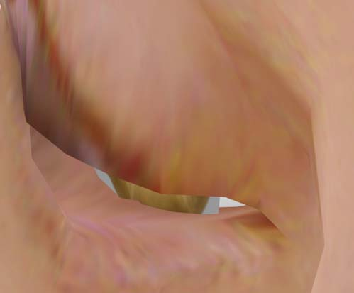
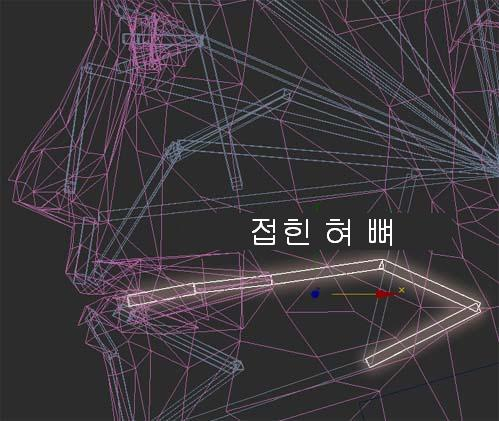
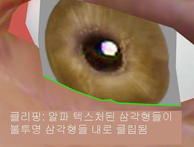
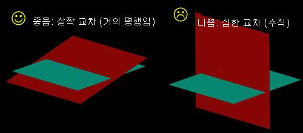
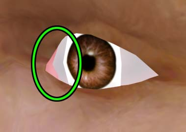
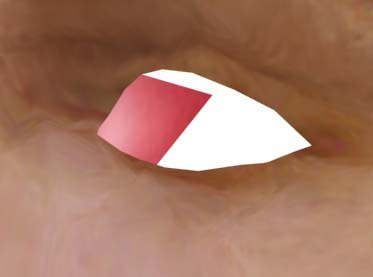

UDN
Search public documentation:
UnrealModelingKR
English Translation
日本語訳
Interested in the Unreal Engine?
Visit the Unreal Technology site.
Looking for jobs and company info?
Check out the Epic games site.
Questions about support via UDN?
Contact the UDN Staff
日本語訳
Interested in the Unreal Engine?
Visit the Unreal Technology site.
Looking for jobs and company info?
Check out the Epic games site.
Questions about support via UDN?
Contact the UDN Staff
Unreal 모델링 가이드
문서 변경 안내: 이 문서에서는 Unreal 에서의 모델링에 적합한 몇 가지 디자인 선택을 제안합니다. 또한 레벨 및 캐릭터에 대해 권장되는 폴리곤의 수를 제공합니다. Unreal Engine 에서의 모델링이 처음인 분들에게 알맞은 수준입니다. Document Changelog: 최종 업데이트 Michiel Hendriks – 약간의 사소한 변경. 이전 업데이트 Tom Lin (DemiurgeStudios?) - 문서 요약 섹션 에 대해. 원저자 Tom Lin (DemiurgeStudios?).Unreal Engine 에서의 모델 작성
Unreal Engine 에서의 모델 작성은 일반적인 모델 작성과 매우 비슷합니다. 이 문서에서는 엔진 특유의 고려사항들에 대해 다루며, 그밖의 게임 관련 모델링 이슈들에 대해 언급하겠습니다. 주로 애니메이트된 플레이어 모델에 초점을 맞출 것입니다.모델 계획 단계
이것은 모델링에서 가장 기본이 되는 부분이지만, 아무리 강조해도 지나치지 않은 부분입니다. 절대적으로 필요한 첫 단계는 모델이 어떤 일을 해야 할 것인지 결정하고, 이 액션들을 중심으로 빌드하는 것입니다.예를 들어, 모델이 기어 오르기/들어 올리기/물건 던지기를 많이 할 것이라면 모델의 어깨에 폴리곤을 더 많이 사용하여 알맞게 형태가 변하는 것을 보장해야 할 것입니다. 카메라가 캐릭터의 뒤편에 놓여지는 경우가 많을 것 같으면 (제 3 자 카메라), 폴리곤을 모델의 얼굴에 모두 사용할 것이 아니라, 등에 충분한 양이 할애되도록 확실히 해두어야 합니다. 비슷한 맥락에서, 사람들이 이 모델의 어느 면을 가장 많이 바라보게 될것인지도 고려하십시오. FPS (1 인칭 슈팅)에서는 액션이 대부분 비교적 먼 거리에서 빠르게 행해집니다. 이런 경우에는 폴리의 많은 몫을 얼굴에 사용하려 애쓸 필요가 없습니다. 얼굴이 가까이에서 보이거나 정지 상태로 있을 가능성이 희박하기 때문입니다. 그보다는 폴리곤을 고르게 분배하십시오. 물론 비캐릭터 모델에 대해서도 같은 지침이 적용됩니다. 자동차 모델의 경우, 문이 열릴 것인지? 차창을 통해 안을 들여다 볼 수 있는지? 차가 뒤집히는 일이 있을 것인지? 바퀴가 떨어져 나가는 일이 있을 것인지? 등을 고려해 봐야 합니다. 여러분이 무엇을 보게될지 생각해 보고, 지혜롭게 폴리곤을 적용하십시오.매끄러운 메쉬
Unreal Engine 에서 캐릭터 모델들은 대개 매끈한 스킨의 메쉬여야 합니다. 이것은 모델이 분리된 조각들로 만들어지는 것이 아니라, 표면이 연속적인 일체라는 뜻입니다. 이것은 모델 자체가 뻣뻣한 부분들의 집합이 아니라, 뼈 구조에 따라 변형될 수 있도록 합니다. 이 이음새 없는 외관은, 매끈한 스킨을 가지지 않은 모델의 텍스처에서는 이음새를 ‘감출’ 길이 없는 팔꿈치, 무릎 및 손가락 같은 관절 부위에 대해 특히 바람직한 것입니다. 매끈한 스킨을 가진 모델에서는 그림자도 훨씬 논리적으로 드리워집니다. 사실, 어떤 경우에는 모델이 완전히 매끈하지 않은 스킨으로 만들어지는 것이 더 그럴듯할 수 있습니다. 인조 인간, 로봇, 캐나다 원주민 등은 관절이 뻣뻣해서 부드럽게 구부러질 필요가 없을 수도 있습니다. 방탄 조끼를 입고 있는 S.W.A.T. 멤버의 경우를 생각해 보십시오 – 어깨 관절은 애니메이션에서 어깨의 고통을 완화하는데 도움이 되도록 매끈한 스킨으로부터 떼어낼 수 있는 논리적 지점입니다. 대부분의 경우 매끈한 스킨을 사용하는 것이 최선의 선택입니다.특별한 관절들
우리는 모든 프로젝트에서 단지 달리기나 도약하기만 사용하는 것으로는 충분하지 않은, 비디오 게임에 대해 이야기하고 있습니다. 눈 깜박이기, 시선 추적, 혀의 움직임 및 손 동작/제스처 등은 새 모델 작성을 시작하기에 앞서 고려해야할 최소한의 일반적인 것들입니다. 이러한 액션들은 모델에 풍부한 생명을 불어 넣어주지만, 여기에는 그만큼 비용이 들어갑니다. 알파 채널을 가진 텍스처, 더 많은 폴리곤 수, 복잡한 장구 및 더 많은 애니메이션이 이러한 것들이 추가됨에 따르는 함정들입니다. 다음에 소개하는 약간의 요령들은 위의 기능들을 작성하는데 도움이 될 것입니다.움직이는 눈
이 방법에는 애니메이트된 메쉬에 알파 채널을 사용할 것이 요구됩니다. 모델의 눈에 대해서, 눈알처럼 보이도록 텍스처된 둥근 눈구멍이 최선이며 유일한 해법이라고 생각하는 사람이 있을지도 모릅니다. 그렇지만 텍스처에 알파 채널/마스크를 사용한다면 훨씬 더 효율적인 방법도 있습니다. 완전한 눈알을 만드는 대신 눈이 흰자위와 홍채, 이 두 부분으로 나뉘어져 있다고 생각해 보십시오. 흰자위가 매끈한 스킨으로 된 얼굴의 일부로서 작성되고 (절대 움직이지 않게 됨) 홍채가 시트로 된 폴리곤에서 흰자위 위를 떠다니도록 한다면, 홍채만이 ‘눈알’의 표면을 따라 움직이도록 하는 것이 가능합니다. 이것은 편리한 눈알 시뮬레이션으로서, UT2003 과 UT2004 에서 사용되었습니다.
눈꺼풀
캐릭터 스튜디오에서 기본적으로 제공되는 것이 아닌 안면 뼈 구조가 요구됩니다. 눈꺼풀은 매끈한 스킨으로 어느 정도 ‘꾸며낼’ 수 있습니다. 쉬운 방법은 하나의 뼈를 단순히 위 아래로 회전하는 한 줄의 정점들에 바인드한 다음, 즉시 그 스킨을 펼쳐진 폴리곤 시트 위에 있는 눈 위에 끌어다 놓는 것입니다. 모델링의 관점에서는, 안면 도형을 지나치게 변경하지 않고 안전하게 펼쳐질 수 있는 한 줄의 정점들이 있는지만 확인하면 됩니다.
혀
캐릭터 스튜디오에서 기본적으로 제공되는 것이 아닌 안면 뼈 구조가 요구됩니다. 혀는, 설명이 필요없이, 필요한 만큼 움직일 수 있어야 합니다. 그러나 혀의 주요 부분이 입 밖으로 나오게 하려면 – 누군가를 향해 혀를 내민다거나 입술을 핥을 경우 – 다소 변칙적인 뼈 구조가 필요합니다. Unreal 은 수시로 잡아 늘여지는 뼈를 다룰 수 없습니다 - 오직 뼈의 방향과 위치만 이해할 수 있습니다. 저는 뼈가 자체 위로 접혀지도록 하는 것이 혀에 대해서 최선이라는 것을 발견했습니다. 기존의 뼈를 잡아 늘이는 것이 가능하지 않기 때문에, 접은 뼈를 아코디언처럼 펼쳤습니다.
모델링의 관점에서는 정상적으로 보이는 혀를 작성하는 것만으로 충분합니다; 다만 혀가 입안 깊숙이 자리 잡아서, 내밀어졌을 때 대부분의 내밀어진 부분이 입의 내부에 있도록 하십시오.Refpose (참조 포즈)
Unreal Engine 의 모델링에서 언제나 염두에 두어야 할 중요한 컨셉 가운데 하나는, Refpose ("reference pose". 참조 포즈)와 애니메이션을 구별하는 것입니다. .PSK 파일 내에 넣어지는 참조 포즈에는 모델과 뼈에 대한 정보가 있을 뿐, 애니메이션에 관한 정보는 전혀 없습니다. 이곳이 포락면에 의해 모델의 정점들에 뼈의 영향이 미치게 될지 또는 고정 정점에 의해 미치게 될지 설정하는 곳입니다. 이와는 반대로, .PSA 파일에 보존될 애니메이션들은 뼈 구조의 움직임과 관련된 정보만을 보유하며 가중치에 대한 정보는 전혀 없습니다. 참조 포즈는 본래 모델링할 대상이며, 리깅하기에 알맞고 쉬운 자세로 있는 캐릭터이므로 이것이 타당합니다. ActorXKR 는 위에서 언급한 파일 타입들을 생성하는 플러그인입니다. 더 상세한 설명은 ActorXMaxTutorialKR 또는 ActorXMayaTutorialKR 문서를 참고하십시오. 많은 아티스트들이 다리를 벌리고 서서 팔을 한껏 양 옆으로 펼치고 있는 표준 참조 표즈로 모델을 만듭니다. 최근에 저는 팔을 45 도보다 약간만 더 벌린 캐릭터 모델을 만들기 시작했습니다. 적어도 반 이상의 경우 팔을 내리고 있게 되므로, 모델들이 팔을 내린 상태로 편안해 보이도록 하는 것이 팔을 쫙 벌리고 있는 것만큼 (훨씬 부자연스러운 포즈) 중요합니다. 이것은 음영의 리깅을 더 어렵게 하지만, 어깨의 변형을 줄여주므로 그만큼 가치가 있다고 생각합니다.
Smoothing Groups (마무리 그룹)
마무리 그룹을 사용하여 정적 메쉬를 매끄럽게 만드는 일은 아무 문제없이 작용합니다. ActorXKR 도구를 사용하는 뼈대 (캐릭터) 모델에 대해서는 마무리하기가 전적으로 지원되지 않지만, 모델을 가져오기한 다음 이를 마무리 그룹으로 세분하면 마무리 그룹이 작용하는 것처럼 보인다는 것을 발견하게 됩니다. 어떻게 된 일이냐구요? ActorXKR 는 정점들을 마무리된 가장자리를 따라 분리한 다음 분리된 모델의 각 ‘조각’을 매끄럽게 함으로써 마무리를 위조하는 것으로 밝혀졌습니다. 이것은 마무리를 흉내내게 되지만, 모델에서 마무리된 가장자리를 따라 정점의 양이 두배가 되도록 합니다. 분리된 각 정점은 메모리 및 렌더링의 부담을 추가시키므로, 뼈대 모델을 그룹으로 분리하는 것은 권장되지 않습니다. 그럼에도 불구하고 마무리를 사용하기로 결정했다면, 반드시 ActorXKR 패널에서 "bake smoothing groups (마무리 그룹 굽기)" 박스를 체크하십시오.
게임 내의 관점
게임을 위한 모델링이 독특한 점은 카메라가 넓은 동작 범위를 갖는다는 것입니다. 그렇지만 이 점은 아트스트들에게는 어려운 점입니다 – 카메라가 다양한 거리와 관점에서 모델에게 향하기 때문에 좋은 모델을 보기 흉하게 왜곡해서 보여줄 수 있습니다. 모델의 발을 직선으로 내려다보는 것은 때로 그 발이 작아 보이고 다리가 바닥에 가까울수록 가늘어 보이는 효과를 가져옵니다. 이와는 대조적으로 모델을 50 야드 떨어진 곳에서 보면 발이나 다리가 알맞게 보일 수 있습니다. 어떤 아티스트들은 발을 정상보다 크게 만들고, 다리가 발에 가까와질수록 약간 넓게 만들어 이 효과를 상쇄합니다. UnrealDemoModels 문서에서 이것의 예를 참고하십시오. 이러한 상황들에 대해서는 엄격하고 확고한 규칙이 없습니다. 모델들이 어떻게 표시되는지 평가해보고 어떤 것이 적절한지 알아보십시오. 유의해야 할 또 한가지는 보여지는 크기입니다. 화면상의 캐릭터는 그 모델에 사용한 텍스처 맵보다 픽셀 수가 적어 보이는 경우가 많습니다. 여러 개의 모델을 만들 경우에는 그들을 충분히 구별하여 멀리서도 알아볼 수 있도록 하십시오. 이것은 UT2003 같은 복수 플레이어/팀 기반의 게임에서는 확실히 더 중요합니다.Unreal Engine 에서의 몇 가지 비법
모델링 작업을 다소 쉽게하고, 더 나은 모델을 만들기 위한 몇 가지 조언입니다.폴리곤 클리핑
매끄러운 스킨의 모델에서는 서로 직접 클립되는 다각형들은 대개 보기 흉합니다. 그러나 매끄러워진 지역에서 접합 부분을 감추어주는 디테일을 추가한다면, 폴리곤을 클립하는 것은 삼각형 수 및 시간을 절약하는 훌륭한 방법입니다. 폴리곤 클리핑을 시트에 눈 (홍채)을 만드는 위의 요령에 사용하면 아주 효과가 좋습니다. 폴리곤 클리핑은 현재 UnrealEd 에서 완벽하게 기능합니다.
이 눈을 보면 눈의 홍채 부분이 거의 사각형인 폴리곤 시트 위에 있는 것을 확인할 수 있습니다. 저는 Unreal 에서 볼 때 홍채가 둥글게 보이도록 텍스처의 알파 채널에 투명도 정보를 사용했습니다. 삼각형을 클리핑하는 것이 문제가 되는 유일한 때는 두 삼각형에 할당된 소재가 텍스처의 알파 채널을 사용하는 경우입니다.이것은 사소한 디테일 문제가 아니라 분명히 뭔가 잘못된 것입니다.
이 눈에서는 오직 홍채에만 알파 정보가 있기 때문에 아무 문제가 없습니다. 이것이 클립되는 곳에는 (주변의 눈구멍) 알파 채널이 없습니다. 따라서 그리기 순서에 대한 다툼이 없습니다. 그러므로 일찌기 모델을 계획하는 단계에서 어디에 알파 채널을 사용할 것인지 식별하고 두 알파 삼각형이 서로 교차하지 않도록 해야 합니다. 만일 교차할 경우가 생긴다면 (예를 들어 머리카락 등), 삼각형들이 서로 만나는 각도를 최소화 하도록 노력하십시오 – 수직이 되는 것이 가장 좋지 않습니다. 면들이 거의 평행에 가깝도록 각도를 떨어뜨리십시오.
삼각형을 클리핑하는 것이 문제가 되는 유일한 때는 두 삼각형에 할당된 소재가 텍스처의 알파 채널을 사용하는 경우입니다.이것은 사소한 디테일 문제가 아니라 분명히 뭔가 잘못된 것입니다.
이 눈에서는 오직 홍채에만 알파 정보가 있기 때문에 아무 문제가 없습니다. 이것이 클립되는 곳에는 (주변의 눈구멍) 알파 채널이 없습니다. 따라서 그리기 순서에 대한 다툼이 없습니다. 그러므로 일찌기 모델을 계획하는 단계에서 어디에 알파 채널을 사용할 것인지 식별하고 두 알파 삼각형이 서로 교차하지 않도록 해야 합니다. 만일 교차할 경우가 생긴다면 (예를 들어 머리카락 등), 삼각형들이 서로 만나는 각도를 최소화 하도록 노력하십시오 – 수직이 되는 것이 가장 좋지 않습니다. 면들이 거의 평행에 가깝도록 각도를 떨어뜨리십시오.

단면 폴리곤
UnrealEd 에서 양면 텍스처를 유효화 한다면, 단면 폴리곤을 사용하는 것은 시간을 크게 절약해주는 또 한 가지 비결입니다. 모델링 측면에서 보면 추가로 할 일은 없습니다 – 다만 모델의 뒷면이 개방되어 있도록 만들면 됩니다. 깃발 등에 사용하면 좋습니다. 이 경우에도 눈이 좋은 예입니다. 부유하는 홍채는 단면 폴리곤 시트입니다.구멍
매끄러운 스킨의 메쉬를 작성한다는 것이 표면이 완전히 닫혀 있어야 한다는 것을 의미하지는 않습니다. 원한다면 메쉬의 일정 지역을 미완성으로 남겨두어 폴리곤을 절약할 수 있습니다. 당연하지만, 어떤 이유로도 그 틈이 카메라의 바로 앞에 놓여지게 해서는 안됩니다. 표면에 구멍을 남겨 두었다가 그곳에 모델의 뒤를 통한 시야를 차단하는 폴리곤을 배치함으로써 구멍을 “메울”수도 있습니다.
이 경우에도 눈이 이 테크닉의 훌륭한 예가 됩니다. 분홍색 부분은 사실상 머리의 뒤에 깊숙이 배치된 커다란 삼각형입니다. 이것은 직접 얼굴에 흰자위를 위한 틈을 가지고 있는 모델을 통해 보는 것을 방지합니다.